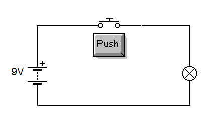
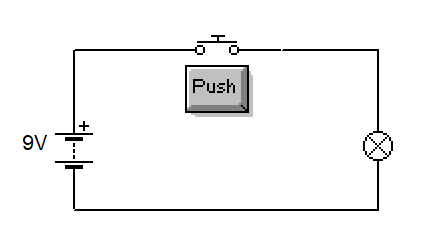
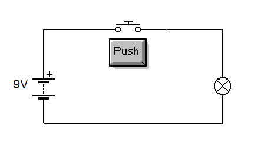

6. Interruptores y pulsadores¶
En esta unidad vamos a estudiar los diferentes interruptores y pulsadores que se pueden utilizar en los circuitos eléctricos.
Diseñar con el programa Crocodile los siguientes circuitos.
 



En esta unidad vamos a estudiar los diferentes interruptores y pulsadores que se pueden utilizar en los circuitos eléctricos.
Diseñar con el programa Crocodile los siguientes circuitos.
